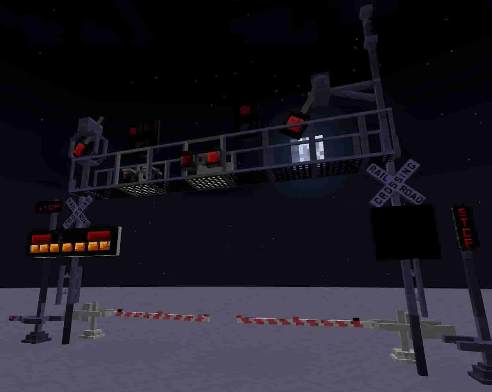

This mod is an addon to Thingamajigs 2 for NeoForge.
In version 1.0.1+, you do not need Thingamajigs to run this mod.
This mod adds purple rails and dynamic railroad crossing components, dynamic railroad(way) signs and multipurpose signs that are highly customizable.
Each component uses a system called 'vertical redstone'. It is different to other mods which use true vertical redstone.
The vertical redstone system starts at the block that receives a redstone signal. It does not need to be low or high, it just needs to be anything but signal strength 0.
The starting block updates the block above it, then that upper block checks the block below if it is powered while telling the block above itself to update.
Thus, the cycle continues until all blocks are updated.
Along with that, a link system exists to connect certain components to a controller, allowing wireless control of components, no redstone required on any of the linked components.
Imagine this scenario:
Currently, you have a linking device (called a linker), controller, and crossing gates in your inventory. Place the controller down somewhere.
Then, shift-right click the linking device on the controller, and the linker will say it is paired to the controller. Walk a little ways away and place down your crossing gates at least 1 block apart from each or more.
Now shift right click one-at-a-time on the crossing gates, and they will say they are paired to the controller.
Apply a redstone signal to your controller, and the gates should go down.
Take away the signal, and the gates will go up.
Now shift-right click on the gates to unlink them, and the controller will no longer command them to go down.
Destroying the controller will remove all links it had, and the components will need to be removed to reset them.
Of course, destroying the linked components will cause the controller to remove links to them completely.
All this is due to the fact that the controller checks what kind of component is at a given position, as storing entire sets of data in a block is bad for networking. Only a position List is stored in controllers.
Tick priority is low to prevent major lag spikes as much as possible.
It should be noted that MultipurposeSignTypes have a very specific syntax.
Keep in mind that
In this case, the
Make sure all texture files match up exactly with what is in the data file or there will be missing textures for this
The
For reference,
In finer context, game ticks, not redstone ticks.
Since Multipurpose Signs do not need alternating textures to function, the best practice is to fill all unused values with thingamajigsrailroadways:textures/entity/multipurpose_sign_variants/multipurpose_sign".